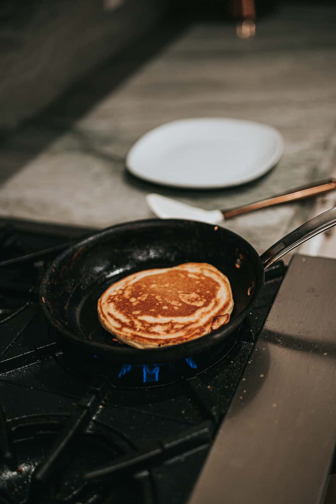

On peut garnir les crêpes de mille façon différentes. chaque famille a ses habitudes et ses garnitures préférées. voici mes idées favorites, classées en deux catégories.
La premiére astuce est de toujours verser le lait lentement dans la farine, cela évite les grumeaux et donne une pâte bienlisse. si la pâte reste épaisse, ajoutez un peu de lait.
La deuxiéme astuce concerne la poêle, qui doit être bien chaude avant la premiere crêpe. Il est normal que la premiére soit un peu ratée, on l'appelle la crêpe du cuisiner.